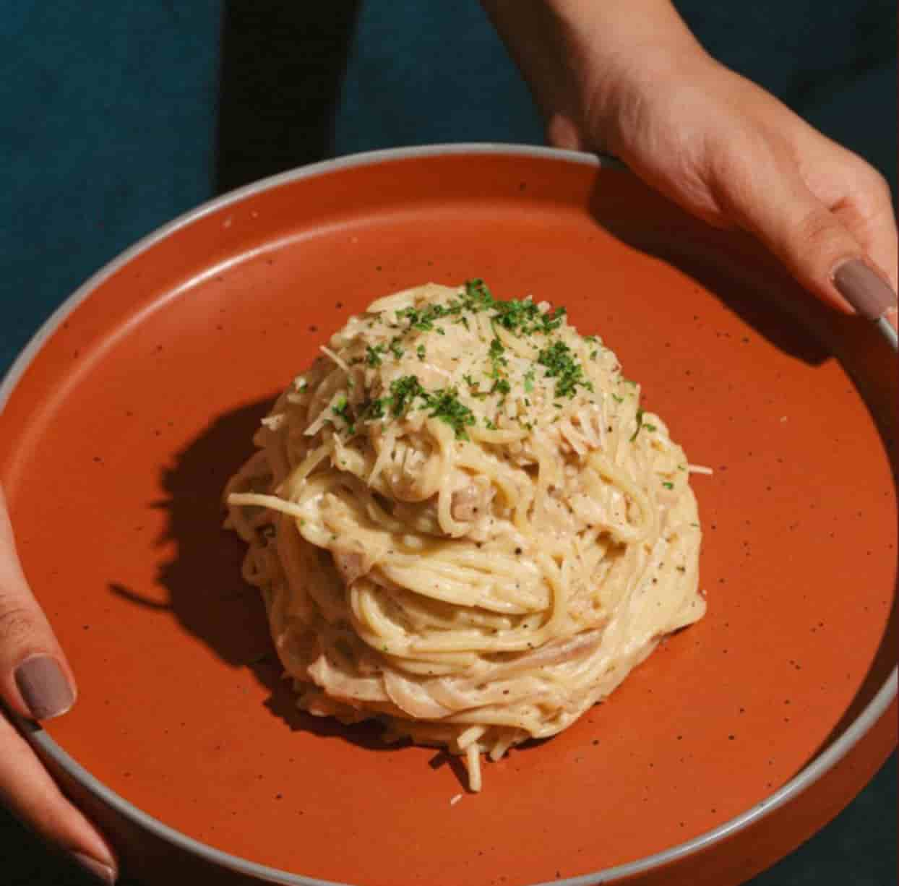
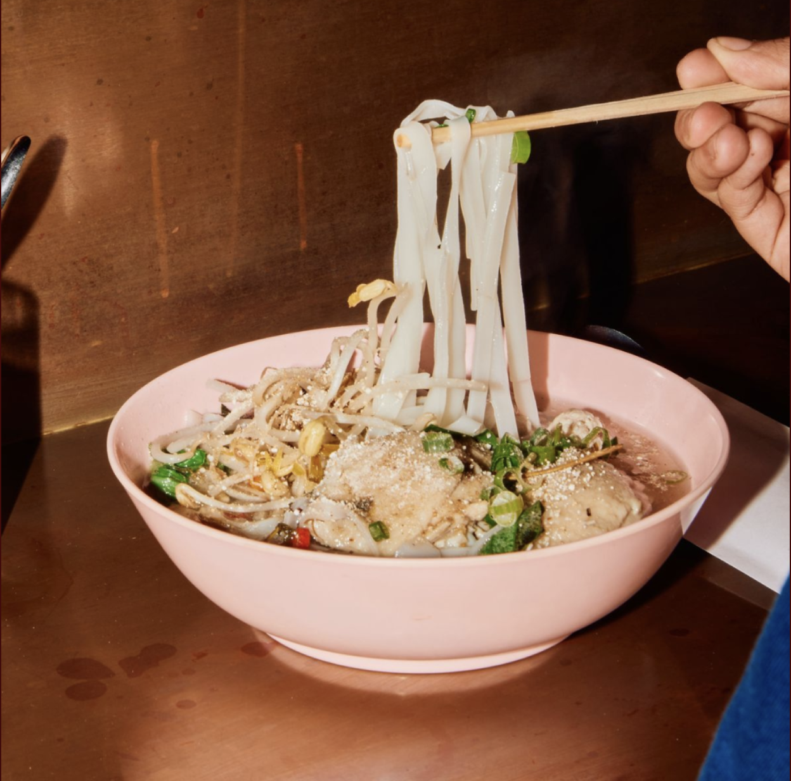

Madbaren er perfekt til en nem og hyggelig hverdagsmiddag med pasta, lasagne og andre italienske
favoritter. Her får du god mad til en overkommelig pris, der passer perfekt til en afslappet aften.
Gennemsnitspris: 95 kr.
Adresse: Amagerbrogade 87, 2300 København S.
Hos Godt Selskab finder du varm og smagfuld ramen med forskellige toppings. Det er et hyggeligt sted
til en afslappet middag med venner, hvor du kan nyde lækker mad i hyggelige omgivelser.
Gennemsnitspris: 110 kr.
Adresse: Holmbladsgade 42, 2300 København S.

La Maison Rouge byder på franske klassikere i hyggelige og elegante omgivelser. Perfekt når hverdagen skal have
lidt
ekstra fransk charme.
Gennemsnitspris: 125 kr.
Adresse: Amager Strandvej 63, 2300 København S